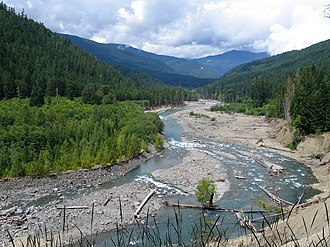
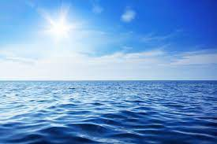
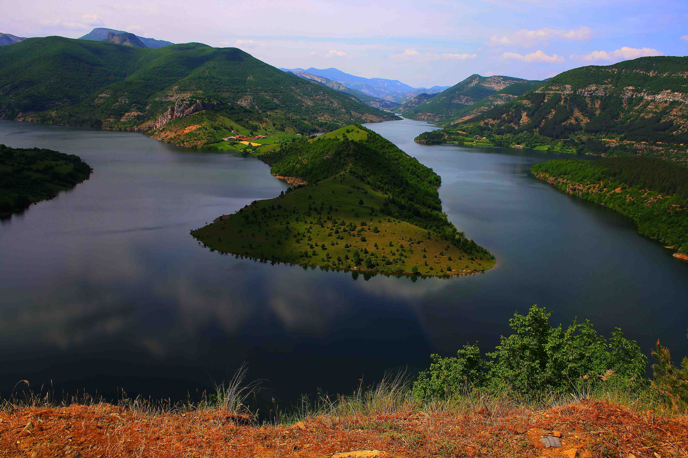
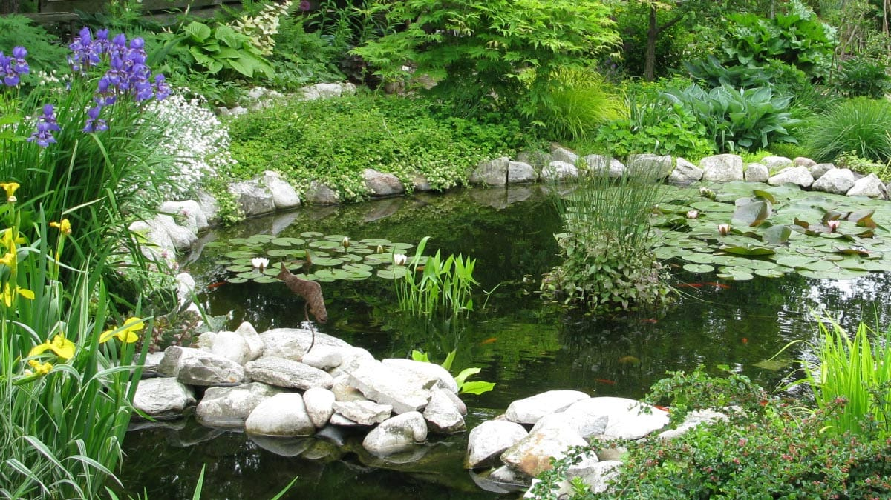
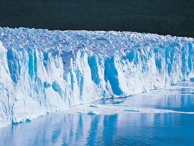
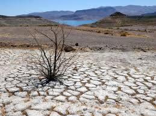
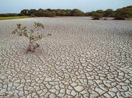
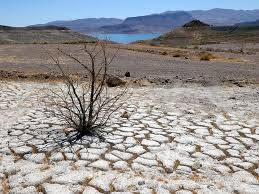
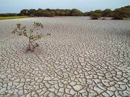

There are various types of water sources around the world, each playing a crucial role in sustaining life and ecosystems. These sources can be broadly categorized into surface water and groundwater.
- River

A river is a ribbon-like body of water that flows downhill from the force of gravity. A river can be wide and deep, or shallow enough for a person to wade across. A flowing body of water that is smaller than a river is called a stream, creek, or brook.
- ocean

An ocean is a large area of water between continents. Oceans are very big and they join smaller seas together. Oceans (or marine biomes) cover 72% of Earth. There are five main oceans: the Pacific Ocean, the Atlantic Ocean, the Indian Ocean, the Southern Ocean, and the Arctic Ocean.
- reservoir

A reservoir is an artificial lake where water is stored. Most reservoirs are formed by constructing dams across rivers. A reservoir can also be formed from a natural lake whose outlet has been dammed to control the water level. The dam controls the amount of water that flows out of the reservoir.
- pond

A pond is a small area of still, fresh water. It is different from a river or a stream because it does not have moving water and it differs from a lake because it has a small area and is no more than around 1.8m deep.
- lake

A lake (from Latin: lacus) is a large body of water (larger and deeper than a pond) within a body of land. As a lake is separated from the ocean, it is not a sea. Some lakes are very big, and people in the past sometimes called them seas. Lakes do not flow like rivers, but many have rivers flowing into and out of them.
- glaciers

A glacier is a large, perennial accumulation of crystalline ice, snow, rock, sediment, and often liquid water that originates on land and moves down slope under the influence of its own weight and gravity.
- Swamp

A swamp is a forested wetland. Swamps are considered to be transition zones because both land and water play a role in creating this environment. Swamps vary in size and are located all around the world. The water of a swamp may be fresh water, brackish water, or seawater.
Groundwater is the water present beneath Earth's surface in rock and soil pore spaces and in the fractures of rock formations. About 30 percent of all readily available freshwater in the world is groundwater. A unit of rock or an unconsolidated deposit is called an aquifer when it can yield a usable quantity of water.
- Aquifer
An aquifer is an underground layer of water-bearing, permeable rock, rock fractures, or unconsolidated materials. Groundwater from aquifers can be extracted using a water well. Water from aquifers can be sustainably harvested through the use of qanats. Aquifers vary greatly in their characteristics
- Artesian well
An artesian well is a well that brings groundwater to the surface without pumping because it is under pressure within a body of rock and/or sediment known as an aquifer.[1] When trapped water in an aquifer is surrounded by layers of impermeable rock or clay, which apply positive pressure to the water, it is known as an artesian aquifer.
- Hand dug wells
Hand-dug wells are ground excavations and their associated structures used to access groundwater in underground aquifers. Until modern times, all artificial wells were hand-dug. Interesting Facts. Hand-dug wells are still the most common means of collecting water in certain parts of the developing world.


 


